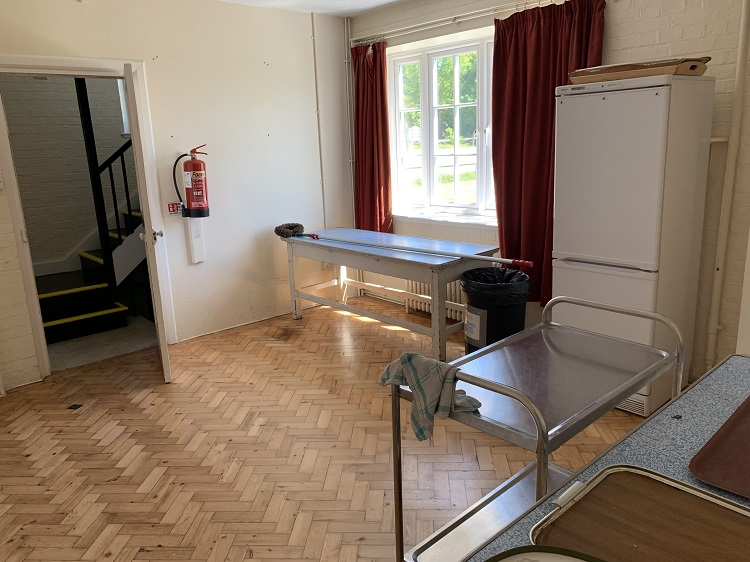

The Thompson Room, previously known as the Anti-Room or WI Hall consists of a 19.85 sqm open area.
Winifred Amy Thompson was a trustee for 5 years (1939-1944) and a prominent member of the Womens Institute (WI). She was
VAD nurse in 1914-1918 and was 15 years the rectors warden at St Mary’s church for 3 rectors.